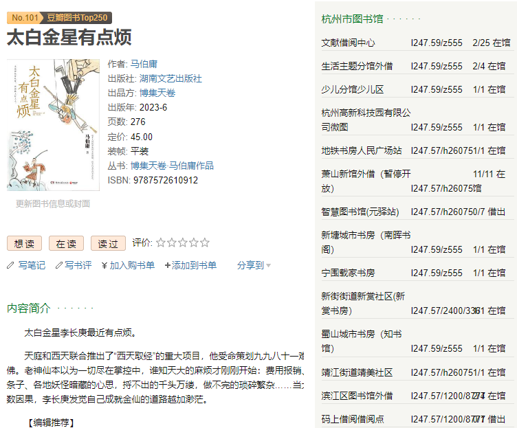

豆瓣+图书馆查询助手
本插件让用户在浏览豆瓣网站时，轻松查看图书馆的藏书情况。 它提供了图书所在馆、编码、可借数量等信息， 让用户更便捷地找到需要的图书资源。省去了单独查询图书馆的步骤，让图书查询变得更高效便捷。
支持的图书馆：

本插件让用户在浏览豆瓣网站时，轻松查看图书馆的藏书情况。 它提供了图书所在馆、编码、可借数量等信息， 让用户更便捷地找到需要的图书资源。省去了单独查询图书馆的步骤，让图书查询变得更高效便捷。
支持的图书馆：